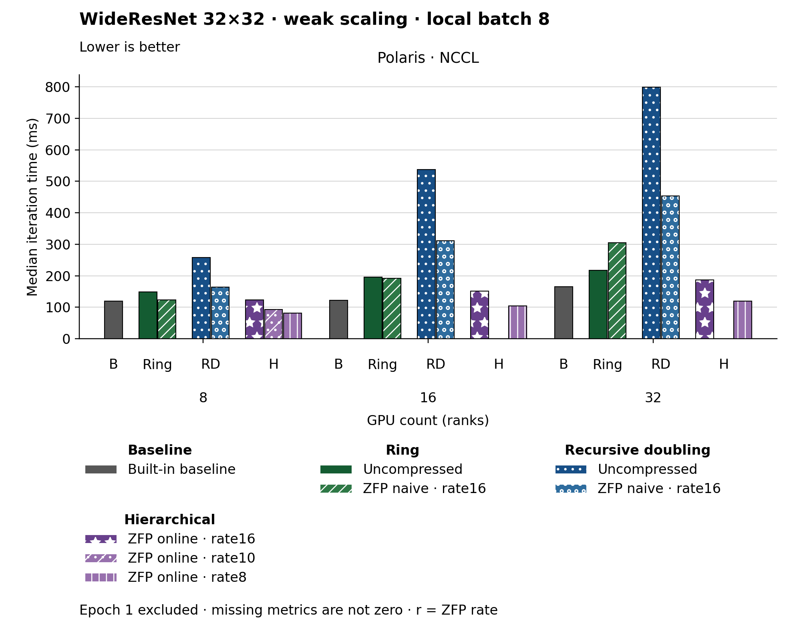

The figure uses bars. Families and methods are identified by text and patterns in addition to color. The metric is Median iteration time (ms). Polaris · NCCL, GPU count (ranks) 8: Hierarchical · ZFP online · rate8 has the lowest plotted value, 81.548. Polaris · NCCL, GPU count (ranks) 16: Hierarchical · ZFP online · rate8 has the lowest plotted value, 104.765. Polaris · NCCL, GPU count (ranks) 32: Hierarchical · ZFP online · rate8 has the lowest plotted value, 120.035. Epoch 1 is excluded. Values are medians; when repeated runs are available the selected repeat policy is median. These are not confidence intervals across repeated jobs. Missing or unrecorded metrics are omitted, not set to zero.
| Panel | GPU count (ranks) | Method | Value | Runs |
|---|---|---|---|---|
| Polaris · NCCL | 16 | none | 122.57 | 1 |
| Polaris · NCCL | 16 | ring | 195.18 | 1 |
| Polaris · NCCL | 16 | ring_zfp_naive:16 | 191.27 | 1 |
| Polaris · NCCL | 16 | hierarchical_zfp_online_coll:16 | 151.47 | 2 |
| Polaris · NCCL | 16 | hierarchical_zfp_online_coll:8 | 104.765 | 2 |
| Polaris · NCCL | 16 | recursive_doubling | 537.15 | 1 |
| Polaris · NCCL | 16 | recursive_doubling_zfp_naive:16 | 311.31 | 1 |
| Polaris · NCCL | 32 | none | 165.68 | 1 |
| Polaris · NCCL | 32 | ring | 216.63 | 1 |
| Polaris · NCCL | 32 | ring_zfp_naive:16 | 304.54 | 1 |
| Polaris · NCCL | 32 | hierarchical_zfp_online_coll:16 | 186.415 | 2 |
| Polaris · NCCL | 32 | hierarchical_zfp_online_coll:8 | 120.035 | 2 |
| Polaris · NCCL | 32 | recursive_doubling | 798.57 | 1 |
| Polaris · NCCL | 32 | recursive_doubling_zfp_naive:16 | 453.31 | 1 |
| Polaris · NCCL | 8 | none | 119.51 | 1 |
| Polaris · NCCL | 8 | ring | 148.16000000000003 | 1 |
| Polaris · NCCL | 8 | ring_zfp_naive:16 | 123.06 | 1 |
| Polaris · NCCL | 8 | hierarchical_zfp_online_coll:16 | 123.755 | 2 |
| Polaris · NCCL | 8 | hierarchical_zfp_online_coll:10 | 92.835 | 1 |
| Polaris · NCCL | 8 | hierarchical_zfp_online_coll:8 | 81.54750000000001 | 2 |
| Polaris · NCCL | 8 | recursive_doubling | 257.83500000000004 | 1 |
| Polaris · NCCL | 8 | recursive_doubling_zfp_naive:16 | 163.865 | 1 |